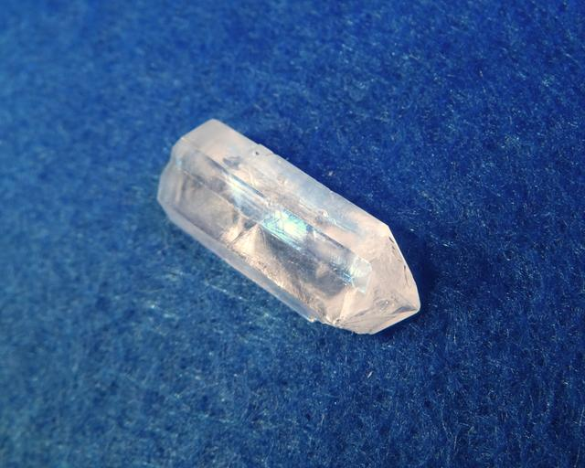

Free saccharin
Formula: C7H5NO3S 
{kind=link}
Properties
- Crystal shape: elongated sticks
- Color: transparent
- Stability on air: stable
Crystals are very fragile. Similarly to its sodium salt, free saccharin also displays strong birefringence (note how the line image doubles):
{kind=link}
Preparation
Can be prepared by reacting sodium saccharin, used as sweetener, with any acid. Free saccharin is almost insoluble in water and precipitates as white sediment.
Growing
Since water solubility is very low, some other solvent must be used. I tried isopropanol and acetone; it is soluble in both, but solubility in isopropanol though better than in water, is still low. Acetone appeared to be a convenient solvent.
{kind=link}
As always, I used slow evaporation method. Because acetone is very volatile, it is important to reduce evapotation speed.
Safety
The compound itself is safe. Acetone solution can pose a fire hazard (acetone is very flammable), and acetone vapors are bad for health.
{kind=link}